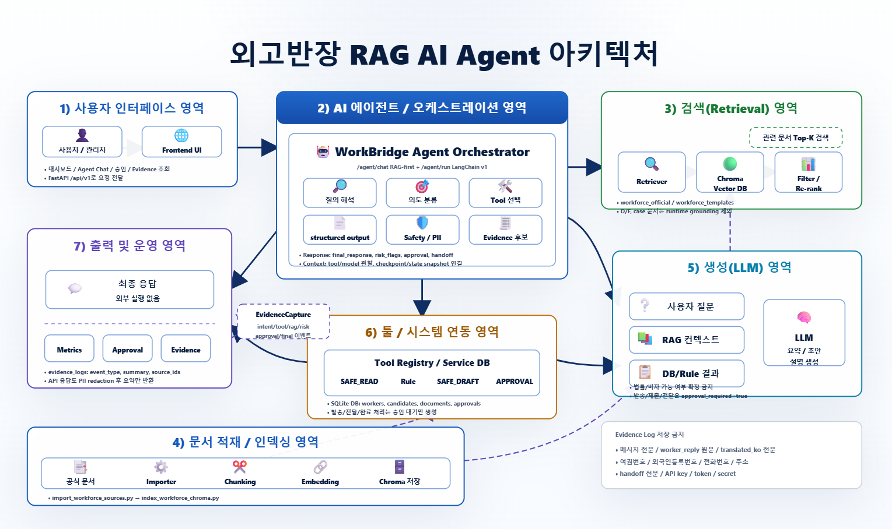
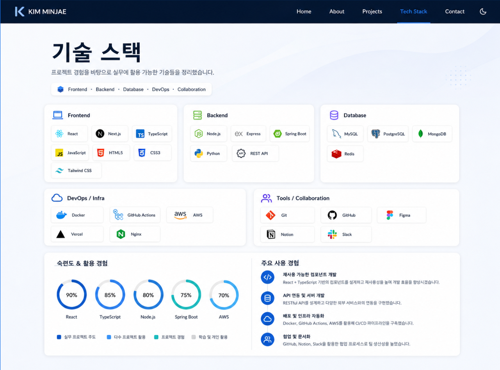

외고반장
외국인 고용 업무, 놓치기 전에 먼저 챙깁니다
Daily Briefing + Approval + Evidence 기반 외국인 고용 업무 관리 시스템
오늘 챙겨야 할 일이
한 화면에 없다
외국인 고용 업무는 이렇게 분산돼 있습니다
결과로 생기는 운영 리스크
E-9 근로자 10~100명
제조업체 인사·총무 담당자
핵심 타겟 (초기)
보조 고객 (확장)
행정사 · 노무사
여러 사업장을 운영하는
B2B2B 운영 주체
다수 사업장 일괄 관리
기존 플레이어는 내부 운영 단계를 채우지 않는다
기존 플레이어
승인 · 증빙 축적
외고반장의 운영 표준화 3요소
해야 할 일을 선제적으로 제시
승인 전 외부 발송 불가
인수인계·감사·재현 가능
오늘 할 일이
한 화면에
.png)
오늘의 브리핑
케이스 상세: 리스크 근거 + 다국어 초안
Xin chào anh Nguyen Van A,
Thị thực của anh sẽ hết hạn vào ngày 20/06/2026.
Vui lòng chuẩn bị: Bản sao hộ chiếu / Hợp đồng lao động tiêu chuẩn.
안녕하세요 Nguyen Van A 씨,
체류기간 만료(2026.06.20)가 임박해 있습니다.
여권 사본 + 표준근로계약서 사본 제출이 필요합니다.
승인 전 실행 불가 — 기록은 자동
Live Agent 처리 단계
승인 후 — Evidence Log
Append-only 기록 — 원문 PII 저장 없이
trace_id 기반으로 감사·재현이 가능합니다
모든 케이스의 동일한 5단계 흐름
누락 · 변경
이유 · 근거
메시지 · 서류
Human Gate
감사 · 재현 가능
통제된
Agentic Workflow

AI는 준비하고, 사람은 승인하며, 실제 외부 실행은 통제됩니다
안전·신뢰 설계 6원칙
엔지니어링이 보장해야 하는 4가지
라우팅 품질 · 불확실성 처리
캐싱 · 배치 · 계단식 추론
테넌트 격리 · Human Gate
Route / Rule / Citation / Approval
Router · Mission Agent · Guardrail
전체 흐름
Rule vs LLM 책임 분리
Safety / Guardrail 체크리스트
Router가 미션을 고르고, Rule Engine이 케이스를 확정하고, Mission Agent는 승인 가능한 초안을 만들며, Approval Gate를 통과한 뒤에만 실행된다
E-9 인력 확보 에이전트
WORKFORCE_CHECKS 5개 + handoff_questions 5개
approval_required=true 항상
여권·증명사진·건강검진·근무가능일·희망직무·숙소·근무조건
점수·순위·성실도 판단 금지
APPROVAL_REQUIRED로 분리,
나머지는 SAFE_*로 안전하게 분해
다국어 컨택 에이전트
스코어 부스트: intent -0.25
스코어 부스트: lang -0.6
F등급·금지 마커 차단
3단계 fallback (특정→관련→전체)
출입국법·고용허가 절차·법령
안전·생활 가이드 PDF/HTML
비자 서류 에이전트
Router
Loader
Gate 🔒
Logger
근로자·비자·서류·계약 데이터
출입국법·고용허가·서식
자연어 또는 스케줄 트리거
PII Filter · Call Limiter · Summarizer
D-day / 체류유형 / 계약 교차 분석
calculate_visa_d_day · assess_visa_risk
누락서류 / CRITICAL vs SUPPLEMENTARY 분류
calculate_missing_documents · assess_document_priority
Tool 위험도 등급
search_policy_documents · get_document_requirements
calculate_missing_documents · quota_tool
generate_expert_handoff_package
update_case_status_completed
서브 에이전트 (순차 실행)
출력물 (HITL 전)
다국어 컨택 에이전트
입력 → 분류 → RAG 필터
F등급·금지 마커 차단
서브 에이전트
출력 → Human Approval → 발송
Zalo / 이메일 / 수동 발송
trace_id / redacted_hash
비자 서류 에이전트
LangGraph 런타임 흐름
Router
Loader
Gate 🔒
Logger
RAG 파이프라인 + 라우팅 품질
RAG 파이프라인
라우팅 품질
LLM: 요약 · 작성 · 설명 · 플랜
unknown intent → 조회 모드 제한, 실행 액션 미생성
비용 설계 원칙
비용이 터지는 지점
비용을 낮추는 설계 원칙
테넌트 격리 · PII 취급 · 권한 모델
데이터 경계와 권한
권한 모델 없이 승인·증빙은 그럴듯한 UI에 불과
PII / 민감정보 취급
API Contract · DB Schema · Observability
API Contract
// 최소 필수 필드
DB Schema — 상태 모델
HandoffPackage · DispatchLog · Tenant · User/Role
Trace / Observability
// 최소 로그 필드
기술 스택

데모가 아니라 운영 신뢰성으로 검증
핵심 측정 지표
신청에서 운영으로 — 비즈니스 모델
매월 반복되는 운영 문제로 이동
시장 단위: 근로자 수 × 반복 이벤트 수
사업장 내부 업무 단계가 비어 있음
파일럿 검증 계획
다음 단계
최소 루프 완성
White-label 설계
운영이 커질수록
과금이 안정되는 구조